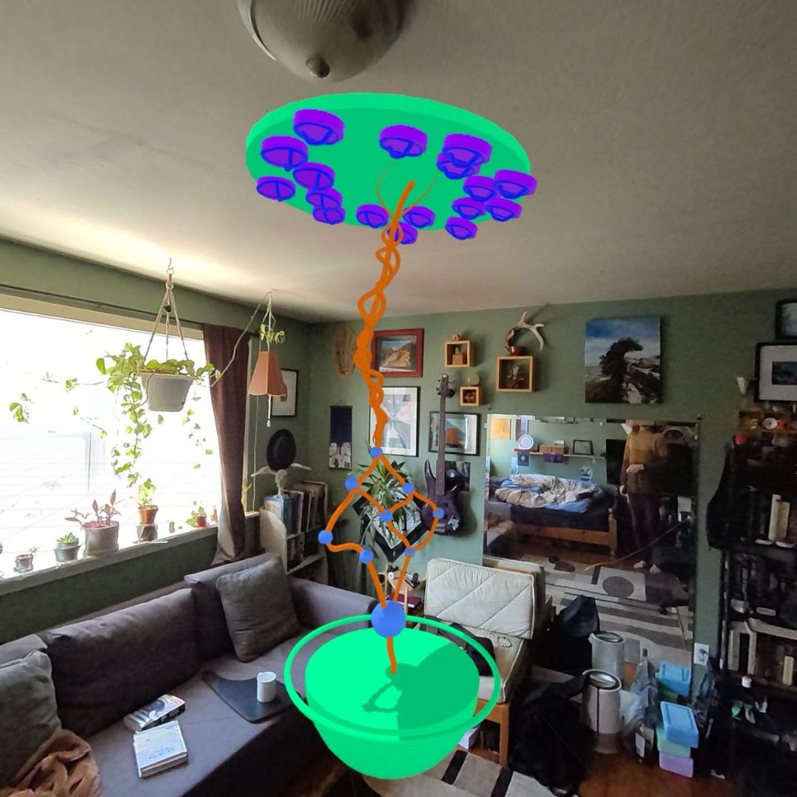

Quest 3 and Apple Vision Pro : Unity, C#, Shader Graph
Asset 15
Asset 15 started life as a volumetric video story. For the Quest 3 and Vision Pro version we kept the captures and the story, and almost nothing else. I redesigned it from the ground up as a full environment AR game that plays out in your actual room, controlled entirely with hand tracking and gestures.
- Role. Main game designer and technical designer on the project.
- Code. Wrote most of the gameplay code in Unity and C#, with one other developer.
- Shaders. Built every custom shader in the game with Shader Graph.
- Team. Turned designs into plans the team could build from, and helped run the project.
01 : Menu
Levels on the ceiling
Levels hang from nodes mounted on your ceiling. You reach up and pull one down to play it.
02 : Mode one
Logic gate puzzle
Move OR, AND, and NOR nodes around the room in 3D, connecting and breaking links until the circuit works.
03 : Mode two
Assembly puzzle
Pieces of a volumetric capture are spread around your space. Find them and put the person back together.
